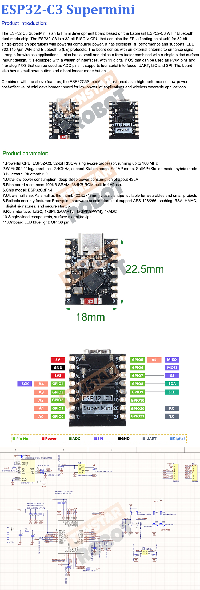
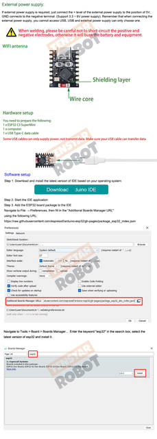
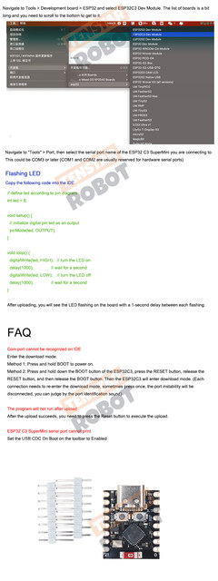
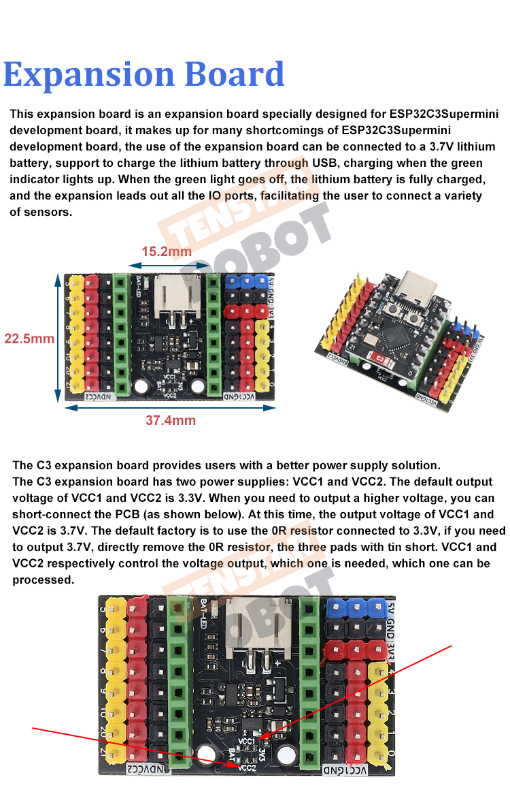

• High-Performance ESP32 C3 Chip :The ESP32 C3 SuperMini Development Board is powered by the high-performance ESP32 C3 chip, ensuring efficient and reliable operation for your projects.
• WiFi Bluetooth Module :Equipped with WiFi and Bluetooth modules, this development board allows for seamless connectivity and data transfer between devices.
• Compatible with Arduino :Designed to be compatible with Arduino, this development board provides a versatile platform for programming and prototyping various electronics projects.
• Compact and Portable :The compact and portable design of the ESP32-C3 WiFi Bluetooth Module makes it easy to carry and deploy in various environments.
• Robust Construction :Originating from Mainland China, the ESP32 C3 SuperMini Development Board boasts robust construction and durability, making it suitable for real-world applications.
• Ideal for Computer Applications :Its application in computers makes it an ideal choice for computer-related projects, offering a wide range of possibilities for development and innovation.



